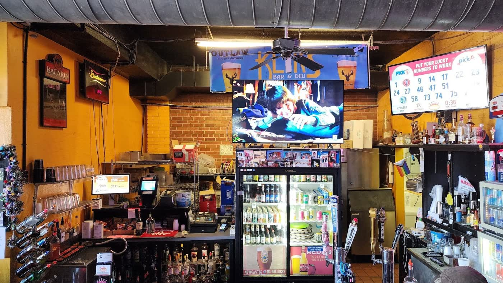

The room on 10th Street
About Klik'S

Klik'S Deli & Bar is a dive bar and deli at 205 N 10th St in Columbia, Missouri. One side of the room is the bar: cold beer, liquor shelves, TVs over the counter. The other is the deli: burgers, Reubens, cheese curds and pork carnitas tacos coming out of the kitchen.
"Great local bar! Relaxed atmosphere, patio, games, and good drink/beer prices."
That is how the bar describes itself, and the room backs it up. Pool table, dart boards, and a patio for warm evenings. PBR drafts come cheap. No dress code, no pretense.
The bar is open Mon to Fri 11am to 1am and Sat to Sun 12pm to 1am, so it works for lunch, dinner, and late drinks alike. Find daily updates on the Klik'S Facebook page.
What people say
4.7 from 98 Facebook reviews